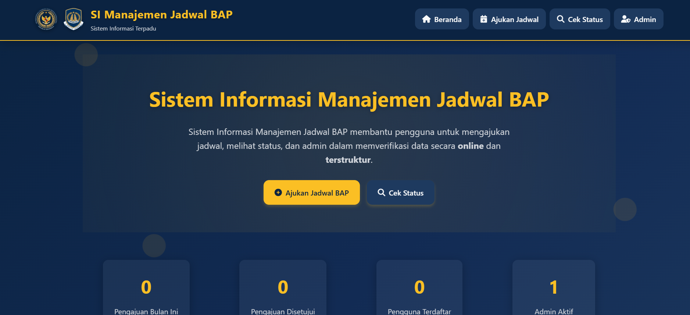
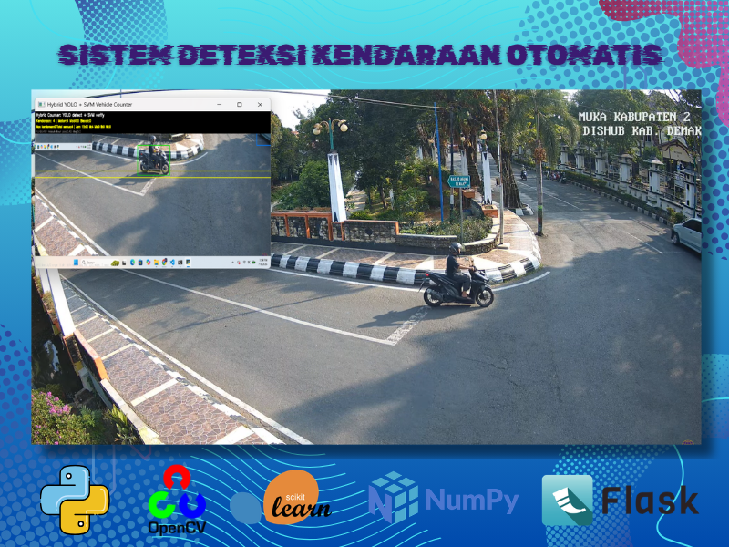

Intan Saravina, S.Kom
Lulusan Sarjana Komputer bidang Multi Media Informatika
Universitas Samudra • IPK 3.60/4.00
Fullstack Web Developer & Multimedia Specialist. Berkompetensi dalam pengembangan website, UI/UX, Python, Microsoft Office, dan produk kreatif digital.
Keahlian & Layanan
Fullstack Developer & Multimedia Specialist
Kapabilitas Teknis
Programming & Development
Layanan Unggulan
Solusi Digital
Fullstack Web Dev
Frontend & backend, REST API, database
UI/UX Design
Wireframing, prototyping, responsive
Python Development
Automation, ML, computer vision
Fullstack Dev
Frontend & Backend
Instansi
Magang Imigrasi
Full Cycle
Konsep-Implementasi
Profil & Pendidikan
Latar belakang akademik dan kompetensi
Sangat Memuaskan
Fak. Teknik
Fullstack & Desain
Kompetensi Informatika
Mendalami integrasi teknologi informasi dengan pengembangan perangkat lunak dan media digital. Meliputi pemrograman Python, fullstack web development, UI/UX, Microsoft Office, pengolahan multimedia, serta perancangan aset visual untuk instansi modern.
Timeline Akademik
2026 - Wisuda S.Kom
IPK 3.60 (Sangat Memuaskan)
2025 - KP Imigrasi Langsa
Sistem BAP & media digital
2022 - Awal Studi
Informatika, Fakultas Teknik
Pengalaman Kerja
Implementasi pada instansi pemerintah
Praktik Kerja Lapangan
Pengabdian praktek kerja bidang kehumasan, pengelolaan media digital, pengembangan sistem BAP, serta verifikasi data administratif di TPI.
Tanggung Jawab:
- Mengembangkan sistem BAP digital
- Produksi konten multimedia
- Pengelolaan database & verifikasi
- Pelayanan informasi publik
Capaian Magang
- Sistem BAP digital berhasil
- Engagement medsos meningkat
- 50+ dokumentasi kegiatan
Skill Diasah
- Pengembangan sistem
- Manajemen proyek
- Komunikasi profesional
Portofolio Karya
Proyek sistem dan desain digital

Sistem BAP Imigrasi
Sistem informasi BAP digital untuk Kantor Imigrasi Kelas II TPI Langsa. Memudahkan pencatatan dan pencarian data.

Sistem Hitung Kendaraan
Computer vision untuk menghitung kendaraan otomatis dengan SVM dan HOG. Deteksi real-time.